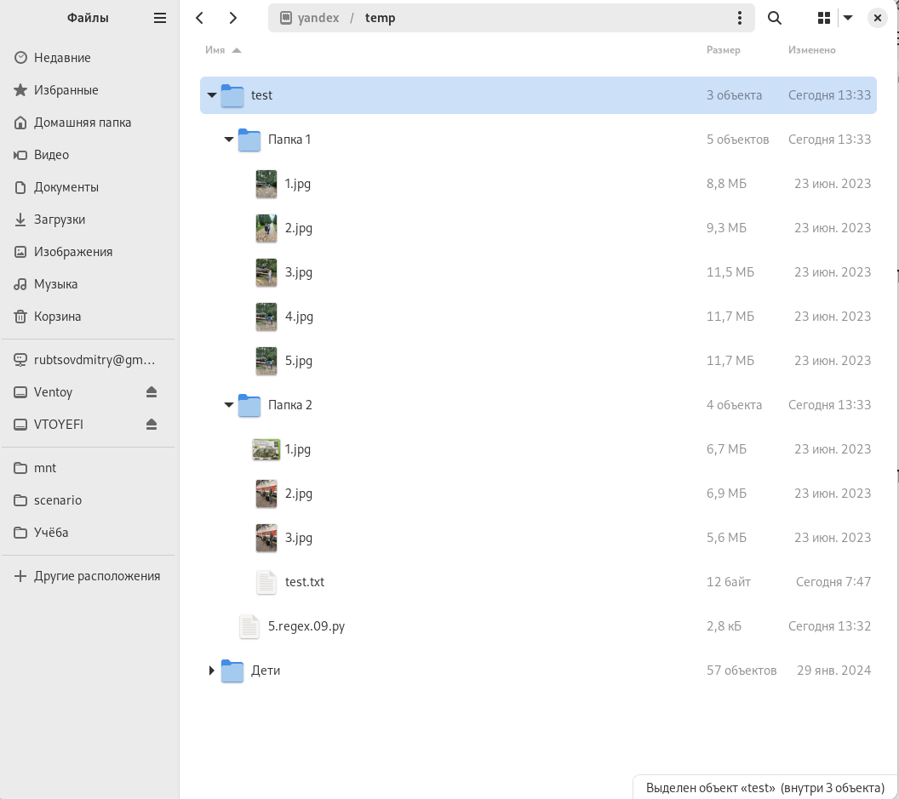
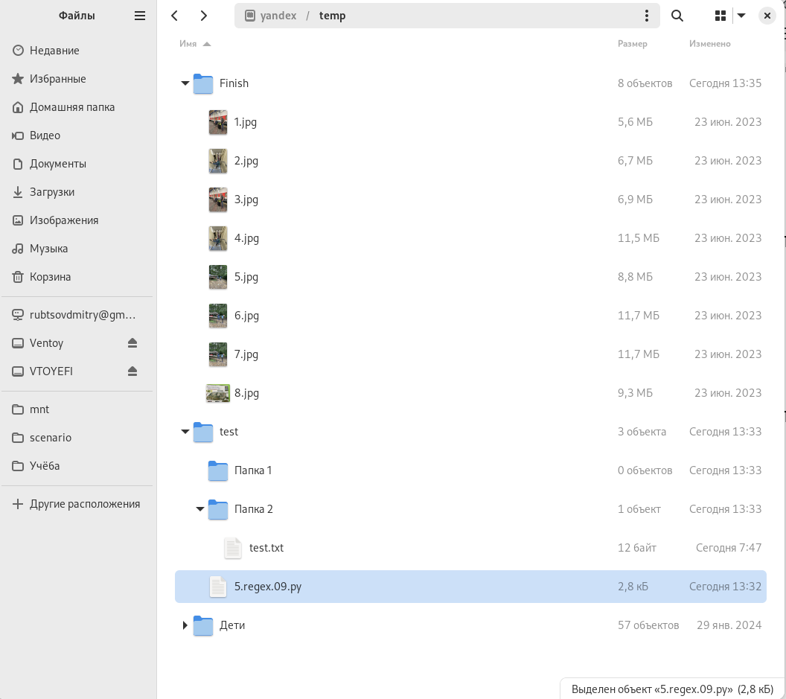

9. Переименование файлов по шаблону №2.
Условие:
Нужно переименовать файлы в текущем каталоге и во всех вложенных по шаблону. Т.е. найдём все файлы с расширением jpg вида: 1.jpg ... Переместим их в каталог уровнем выше, а дальше в каталог "Finish".
Все файлы должны иметь названия вида: 1.jpg, 2.jpg ... n.jpg (нумерация должна быть без повторов и разрывов).
Другие файлы должны остаться без изменений и нетронутыми.
Пример:
До обработки:

После обработки:

Код:
import os, pathlib, re, shutil
out_way = pathlib.Path.cwd() # объект-путь, текущее расположение в ФС
in_way = pathlib.Path.cwd() / ".." # объект-путь, место назначения в ФС
regex_obj = re.compile(r"\d{1,5}\.jpg") # пример шаблона: 1.jpg
os.makedirs("../Finish") # создадим каталог Finish уровнем выше, в него будем перемещать файлы
"""цикл с функцией os.walk(), который обходит все каталоги и файлы и даже вложенные;
ПЕРМЕЩАЕМ ФАЙЛЫ"""
first = 1 # будет меняться значение "first" с каждым каталогом "temp"
temp = []
for foldername, subfoldeers, filenames in os.walk(out_way):
first += len(temp)
temp = []
for i in filenames: # для каждого каталога корневого и вложенного свой список файлов, обойдем его в цикле
b = regex_obj.search(i) # сравним файл в списке с выражением REGEX (ищем файла по шаблону)
if type(b) == re.Match: # обрабатываем только подходящие файлы
temp.append(i) # добавляем во временный список подходящие файлы
amount_files = range(first, first + len(temp))
for a, b in zip(temp, amount_files):
original = foldername + "/" + a # в переменной хранится полный путь к файлу который нужно переименовать
clone = in_way / "Finish" / (str(b) + ".jpg") # в переменной хранится полный путь к файлу который должен получиться
original = pathlib.Path(original)
shutil.move(original, clone)